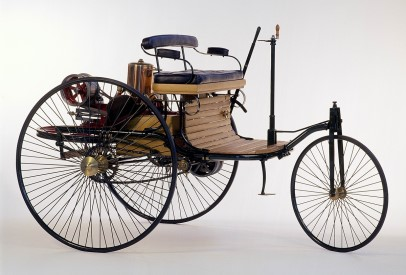

BENZ는 어떠한 회사인가?
메르세데스-벤츠의 정의 및 기원
메르세데스-벤츠(Mercedes-Benz)는 세단(Sedan)과 컨버터블(Convertible), 스포츠카(Sports Car), 쿠페(Coupé), SUV(Sports Utility Vehicle) 차량 등을 제조·판매하는 독일의 자동차 브랜드이다. 1926년 제1차 세계대전 이후 맞은 경기침체로 ‘칼 벤츠(Carl Benz)’가 1883년 설립한 ‘벤츠 앤 시에(Benz & Cie, (영) Benz & Company)’와 ‘고틀립 다임러(Gottlieb Daimler)’가 1890년 설립한 ‘다임러-모토른-게샬프트(DMG·Daimler-Motoren-Gesellschaft, (영) Daimler Motors Corporation)가 합병하여 다임러-벤츠 AG(Daimler-Benz AG)가 설립되었다. 다임러-벤츠 AG는 이후 출시되는 모든 자동차에 상표로 메르세데스-벤츠를 붙였다. ‘메르세데스(Mercedes)’는 DMG에서 1902년 공개하고 세계적으로 인기를 끌었던 모델 메르세데스에서 따왔으며, 이는 스페인어로 우아함을 뜻한다. 메르세데스-벤츠는 세계에서 가장 오래된 자동차 브랜드로, ‘최고가 아니면 만들지 않는다(The best or nothing)’는 창업 정신 아래 럭셔리 프리미엄 자동차 브랜드로서의 명성을 이어가고 있다. 메르세데스-벤츠 [Mercedes-Benz] (세계 브랜드 백과, 인터브랜드)
메르세데스-벤츠의 탄생 및 설립자
1864년 카를스루에에 있는 공과대학을 졸업한 칼 벤츠는 1878년부터 자신이 목표로 했던 “말이 끌지 않는 자동차”를 만들기 위해 가스 구동 방식의 2행정 엔진(2-Stroke Engine) 개발에 매진했다. 칼 벤츠는 1879년 12월 31일, 최초의 휘발유 엔진(Gasoline Engine, 가솔린을 연료로 하는 엔진)을 개발하는 데 성공했으며, 1883년 10월 독일 만하임(Mannheim)에 세계 최초의 자동차 공장 ‘벤츠 앤 시에’를 설립했다. 1885년 2인승 마차를 이용해 0.75마력(Horse Power, 1마력은 1마리 말이 끄는 힘) 1기통 4행정 엔진(4- Stroke Engine)과 강철 파이프, 차동 장치 그리고 세 개의 와이어 스포크 휠(Spoke Wheel)이 장착된 움직이는 차를 만드는데 성공했고, 1886년에는 첫 번째 삼륜 자동차인 ‘페이턴트 모터바겐(Patent-Motorwagen, (영) Patent Motor Car)’을 탄생시켰다.
- 메르세데스-벤츠의 설립자 칼 벤츠(1844~1929)
페이턴트 모터바겐’이라는 이름은 우리말로 특허를 받은 자동차라는 의미이다. 1893년에는 앞바퀴를 여러 각도로 움직일 수 있는 ‘빅토리아(Viktoria, (영) Victoria)’를 개발하여 본격적으로 양산 체제에 돌입했다. 이후 벤츠 앤 시에는 1900년까지 매년 600대의 자동차를 생산했다.
- 칼 벤츠가 만든 최초의 자동차 '페이턴트 모터바겐'
한편, 고틀립 다임러는 1834년 독일 쇠른도르프(Schorndorf)에서 태어났다.그는 1862년부터 독일 가이슬링겐(Geislingen)에서 제도사로 근무했으며 1863년 말, 로이틀링겐(Reutlingen)에 위치한 기계 제작소의 기술감독으로 일하게 되면서, 1865년 빌헬름 마이바흐(Wilhelm Maybach, 자동차 브랜드 마이바흐 설립자)와 첫 만남을 갖게 되었다. 1872년, 가스 엔진 제작 회사인 도이츠 가스 자동차 제작회사(Deutz Gas motoren fabrik)에 입사해 기술 이사까지 맡으며, 니콜라스 오토(Nikolaus August Otto, 독일의 엔지니어)가 개발한 4행정 엔진 기술에 정통하게 되었다. 1886년에는 첫 번째 다임러 엔진을 장착한 4륜 자동차를 완성했다.1890년 고틀립 다임러는 자신의 사업 파트너였던 막스 두텐호퍼(Max Duttenhofer)와 빌헬름 로렌즈(Wilhelm Lorenz)와 함께 ‘다임러-모토른-게샬프트(이하, DMG)’를 설립했다. 1900년 DMG는 344명의 직원들을 가지고 96대의 자동차를 생산했으며, 1902년 빠른 속도와 안전성을 지닌 경량차 모델인 ‘메르세데스(Mercedes)’ 를 탄생시켰다.

- 메르세데스-벤츠의 공동 설립자 고틀립 다임러(1834~1900)
한편 1924년, 제1차 세계대전의 패전 후 독일에 닥친 경기 침체로 자동차 산업도 위기를 맞게 돼 많은 기업들이 합병이나 동업의 형태로 변화했다. 수년 동안 경쟁관계였던 DMG와 벤츠 앤 시에 사 또한 기업연합을 단행하기로 합의하고 디자인, 제작 기술, 구매 전략, 영업, 광고 등의 협조를 통해 경쟁력을 유지할 수 있도록 노력했다. 양 사(社)의 공동 마케팅 활동은 새롭게 설립된 메르세데스-벤츠 AG(Mercedes Benz Automobil GmbH)가 담당했다. 이러한 노력에도 불구하고 양 사(社)는 위기를 완전히 벗어나지는 못했고, 결국 1926년 DMG와 벤츠 앤 시에의 합병이 이루어져 다임러-벤츠 AG가 설립되었고, 이것이 메르세데스-벤츠 브랜드의 시작이었다.

- 메르세데스-벤츠의 공동 설립자 고틀립 다임러(1834~1900)